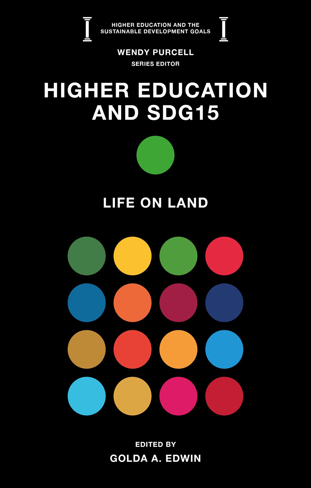
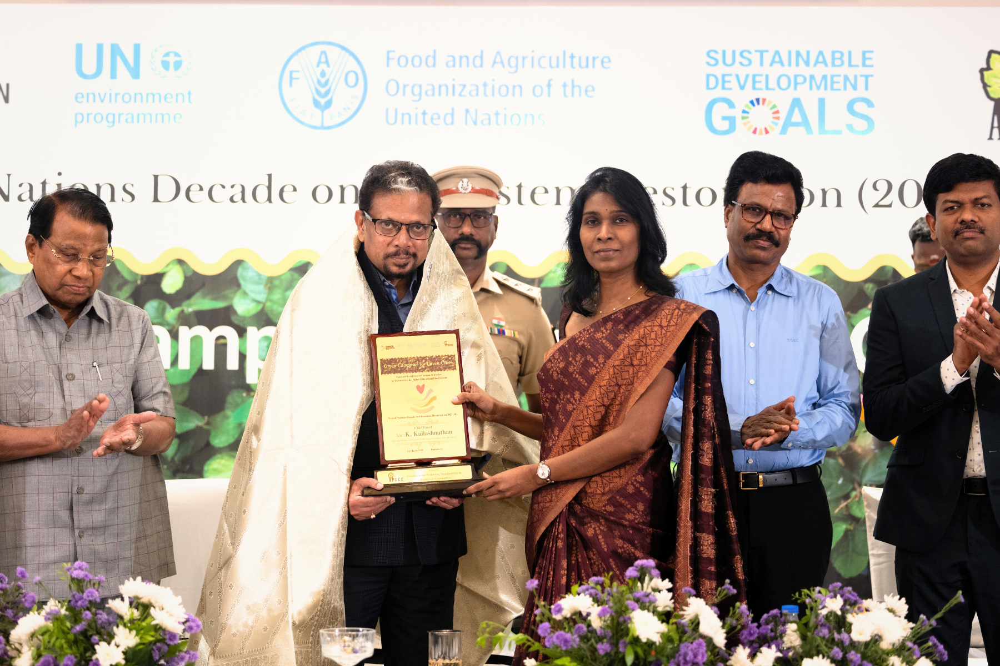

Climate
Building resilience where people learn, work, live and depend on healthy ecosystems.
APSCC is a research-based, not-for-profit organization connecting ecological knowledge, public policy and grassroots practice.
Climate change, nature loss, and pollution and waste are inseparable. Solutions must be, too.
Building resilience where people learn, work, live and depend on healthy ecosystems.
Protecting species, habitats, soil and water systems that sustain life and livelihoods.
Advancing prevention, circularity and practical systems that keep materials in use.
From Puducherry, India, APSCC brings research, collaboration and participation together to help campuses and communities become engines of sustainability.
Discover APSCC →Helping universities and higher-education institutions embed sustainability in everyday systems and learning.
↗Education and action research that moves evidence from institutions into communities.
↗Supporting soil, farming and animal-care practices designed for long-term ecological health.
↗Conservation action for wildlife and the habitats on which vulnerable species depend.
↗Cooperation for the restoration and stewardship of vital freshwater ecosystems.
↗Revitalising village industries and green skills through circular, locally grounded solutions.
↗A national-level initiative for universities and higher educational institutions, advancing campus sustainability as a catalyst for healthier, more resilient cities.
Green Protocols, sustainability capacity-building and climate vulnerability assessments make strong commitments usable in educational institutions, industries, residences and wetlands.
From Biodiversity Management Committees and plastic-free school campuses to technical support for sustainable waste management, APSCC works with local partners to turn intent into action.
As a lead organization for the UN Decade on Ecosystem Restoration Cities & Youth Challenge, APSCC runs three flagship global engagement programmes:
Since 2011, APSCC has grown from a Puducherry-rooted initiative into a UNEA-accredited organization with UN ECOSOC Special Consultative Status — leading the UN Decade on Ecosystem Restoration Cities & Youth Challenge and partnering with 15+ UN and global institutions.
Pathways for learning, operations, participation and accountability to move together.
Co-created approaches that recognize local knowledge and strengthen collective capacity.
Action across soil, water, biodiversity, climate resilience and material flows.
From the Green Campuses for Green Cities campaign to coastal clean-ups, wetland protocols and the Biodiversity Management Committee programme — explore the full record on Our Work.

Featured research Higher Education & SDG 15: Life on Land APSCC-edited volume (Emerald, 2026) positioning universities as catalysts for land restoration and biodiversity. Explore research →
Featured news Campaign envisaging green campuses across 1,000 cities by 2030 The Hindu covers the launch of the Green Campuses for Green Cities campaign led by APSCC. All news & media →We work with governments, learning institutions, funders, businesses, researchers and communities ready to make sustainability practical, credible and lasting.